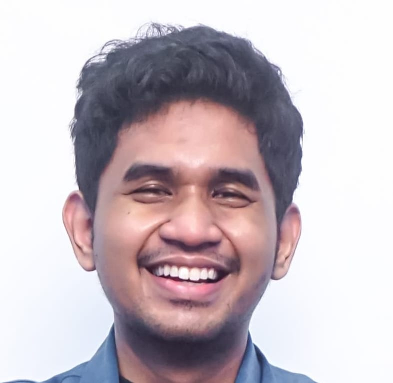

AI and Robotics Engineer
Surabaya, Indonesia
daffa102008@gmail.com · +62 819-3832-2177
Seorang mahasiswa S1 Teknik Robotika dan Kecerdasan Buatan dari Universitas Airlangga yang suka memperumit segalanya. Aktif dalam proyek penelitian dan pengembangan terkait sistem robotika terintegrasi. Saat ini tertarik pada pemodelan generatif untuk robotika dan analisis data.
S1 Teknik Robotika dan Kecerdasan Buatan
Mengembangkan prototipe robot terbang untuk mengukur suhu di perairan besar dengan sedimentasi tanah minimal, sebagai bagian dari magang Observasi dan Forecaster di BMKG.
Proyek penelitian dosen tentang klasifikasi kondisi motor BLDC menggunakan sensor akustik, suhu, dan arus, dikerjakan bersama sebagai Asisten Lab Praktikum Machine Learning.
Proyek lomba GEMASTIK yang berisi chatbot konsultan kesehatan, rekomendasi obat bebas, dan pencarian fasilitas kesehatan terdekat.
Chatbot konsultan kesehatan yang memungkinkan pengguna mengonsultasikan penyakit dan mendapatkan saran kesehatan awal.
Chatbot untuk membantu mahasiswa FTMM melihat berita terbaru serta informasi kegiatan dan pengumuman fakultas secara real-time.